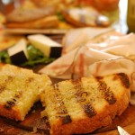
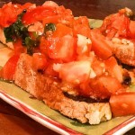
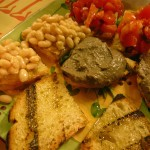

The dinner will be held on May 18, 2015 @ 7:30pm at:
Trattoria Pallottino
Via Isola delle Stinche 1r
50122 Firenze
If you plan to join us please fill form below to select a menu.
There are two options for the meal:
- Meat menu
- Appetizer: Mixed salami and prosciutto with toasted bred (Antipasto tipico toscano con crostini e salumi del casentino)
- Home made pasta with tomato sauce (Rigatoni della casa con pomodoro e rigatino di montespertoli)
- Sliced top sirloin steak or classic fiorentina steak with portobello mushrooms (Tagliata di manzo alla rucola e funghi porcini).
There may be a charge of 5-10 euros if you select the option fiorentina. It also requires minimum 3 people (it is about 3 pounds of meat!), the organizers will do the pooling/match. - Roasted potatoes (Patate arrosto agli aromi di campo)
- Cantucci and Vinsanto

- Vegetarian menu
- Appetizer: polenta and portobello mushrooms
- Home made pasta with tomato sauce (Rigatoni della casa con pomodoro e rigatino di montespertoli)
- Mixed grilled vegetables and aubergine parmigiana (melanzane all parmigiana)
- Cantucci and Vinsanto

The wine will be red wine: Le Maestrelle 2012 Cortona IGT
Select a menu:
The form "Select a menu:" is no longer accepting responses.
Try contacting the owner of the form if you think this is a mistake.